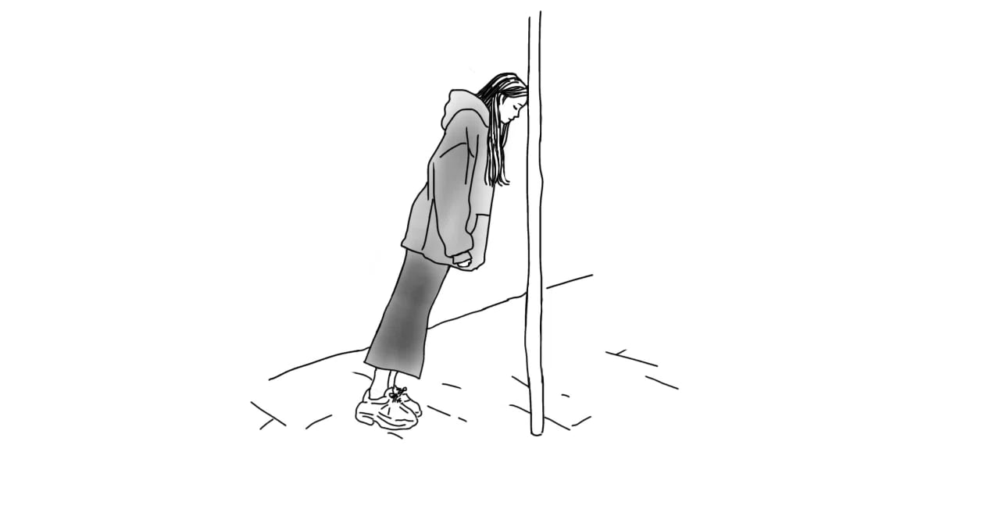
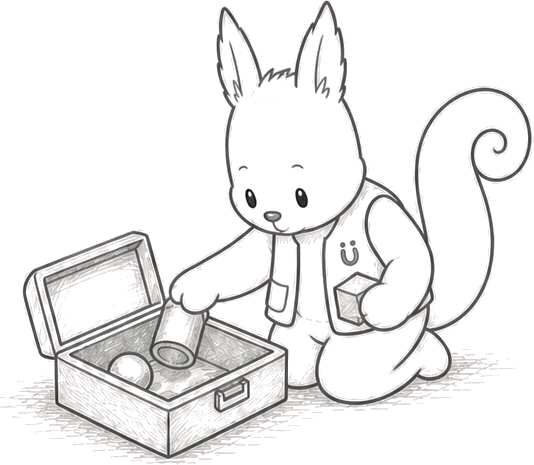
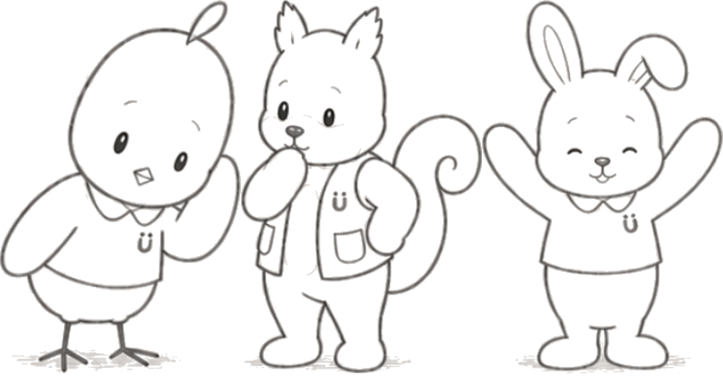

01
Communication is more than words.
A child’s gaze, sounds, gestures, and posture can all tell us something.
A MOTHER'S STORY
The larger the words, the more often they returned to me.

Amber marks what Ken and the children around him had already begun to show us.
Four years later.
But somewhere, a new mother or father
may be standing where I once stood.
So fewer families have to face the same isolation and detours.
So I can pass a map back to those just beginning.
This is why I keep building.
There may be more ways for us to connect.
Their own way of joining may already be there.
Their favorite play may be opening the next door.
Not only wish for more.
Notice the small signs already here.

Children are already noticing, feeling,
trying, and reaching out.
gentle · chatty · musical
“I hear you.
Want to tell me more?”
Mimo notices a child’s gaze, sounds, gestures, and pauses—the ways they communicate before words.
Easygoing Mimo sometimes waits a little too long.

curious · inventive · hands-on
“They look alike,
but they don’t feel the same.”
Luke notices how a child touches, holds, smells, and repeats things, then finds tools and surroundings that work better.
When inspiration strikes, Luke sometimes tries too many ideas at once.

energetic · playful · ready to try
“Oops, too fast?
Let’s slow down and start together.”
Gen notices posture, footing, balance, and tiredness, then changes the pace or the way a child takes part.
Enthusiastic Gen sometimes cheers a little too loudly.

01
A child’s gaze, sounds, gestures, and posture can all tell us something.
02
We don’t assume we know why. We watch how the child responds and try changing the tools, surroundings, pace, or way we communicate.
03
Resting, saying no, watching, or joining for just one part are meaningful choices too.
04
What a child enjoys and does well can open the door to learning and growth.
05
With the child at the center, families, friends, guides, and professionals can connect and celebrate each small step together.
At HugMap, we bring different perspectives together to help each child and family find what works for them.

Each one can open a new possibility.
Small signs and small steps can shape what comes next.
HUGMAP STORIES
See the signs. Take the next step. Grow together.